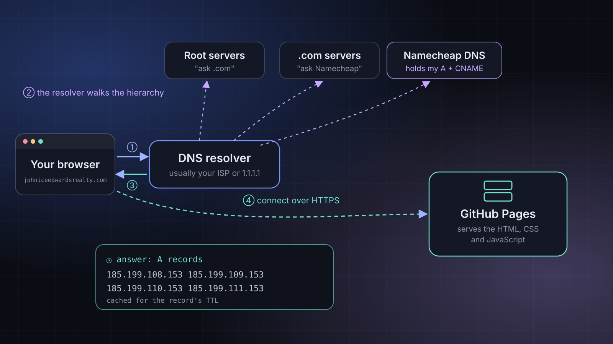

What Pointing a Domain at My Website Taught Me About DNS
A, CNAME and TTL stopped being flashcard terms the day I had to point my own domain at GitHub Pages. Here is what each record does and how to check them yourself.

DNS is one of those topics that shows up early in networking courses. Domain Name System, translates names into IP addresses, the "phone book of the internet." I could recite that. I didn't really get it until I had to connect my own domain, johniceedwardsrealty.com, to a website hosted on GitHub Pages.
Here's what I learned, explained the way I wish it had been explained to me.
The problem DNS solves
Computers find each other using IP addresses like 185.199.108.153. Humans are terrible at remembering those. DNS lets us type a name instead, and quietly looks up the number behind the scenes.
When you visit a website, roughly this happens:
- Your browser asks a DNS resolver (usually run by your internet provider, or a public one like 1.1.1.1) for the site's address.
- If the resolver doesn't already have the answer saved, it works its way down the hierarchy: the root servers point it to the .com servers, which point it to the domain's authoritative name servers. For my domain, those belong to Namecheap, where I registered it.
- The authoritative server returns the records I set up, and the resolver passes the answer back to your browser.
- Your browser connects to that IP address and asks for the page.
The records I actually needed
To connect a domain to GitHub Pages, GitHub's documentation asks for two kinds of records. Here's what they look like in a DNS provider's dashboard:
| Type | Host | Value | What it means |
|---|---|---|---|
A | @ | 185.199.108.153185.199.109.153185.199.110.153185.199.111.153 | The bare domain points straight to GitHub's servers. Four addresses means if one is unavailable, the others still work. |
CNAME | www | slightglimmer.github.io. | The www version is an alias: "go look up this other name instead." |
A records
An A record maps a name directly to an IPv4 address. The @ symbol is shorthand for "the domain itself," with nothing in front of it. (There's also an AAAA record, the same idea for IPv6 addresses.)
CNAME records
A CNAME (canonical name) record says "this name is really that other name." It's useful because if GitHub ever changes the IP addresses behind slightglimmer.github.io, the www address keeps working without me touching anything.
One rule tripped me up: you generally can't put a CNAME on the bare domain (@), because the root of a domain also has to hold other records, and a CNAME can't share a name with other records. That's why the bare domain uses A records and www uses the CNAME.
Notice the dot at the end of slightglimmer.github.io.? In DNS, a trailing dot means "this is a complete name, do not add anything to it." Some dashboards add it for you; some need you to type it.
Checking your work from the terminal
You don't have to trust a dashboard. The dig command (available on Linux and macOS) asks DNS directly. On Windows, nslookup does a similar job.
# Ask for the A records of the bare domain
$ dig johniceedwardsrealty.com A +short
# Ask what the www name is an alias for
$ dig www.johniceedwardsrealty.com CNAME +short
# Ask one specific public resolver instead of your default one
$ dig @1.1.1.1 johniceedwardsrealty.com A +shortIf everything is set up correctly, the first command should list the four GitHub Pages addresses, and the second should return slightglimmer.github.io.
Without +short, dig prints the full response, including an ANSWER SECTION where each line shows the name, the TTL in seconds, the record type and the value.
TTL, or why changes aren't instant
Every record has a TTL (time to live): how many seconds resolvers are allowed to cache the answer before asking again. That caching is why DNS is fast, and also why a change you make might not show up everywhere right away. People call this "propagation," but really it's caches around the internet waiting for their saved copy to expire.
A practical tip I picked up: if you're about to change a record, lowering its TTL ahead of time means the old answer expires faster when you make the switch.
Why this was worth learning properly
DNS problems show up everywhere in IT: websites that won't load, email that won't deliver, cloud services that can't find each other. "It's always DNS" is a running joke among systems people for a reason. Understanding it from a real setup, rather than a diagram in a textbook, made it stick.
Next, I want to dig into what happens after the browser has the IP address: TCP connections, TLS certificates and HTTPS. That'll be its own post.